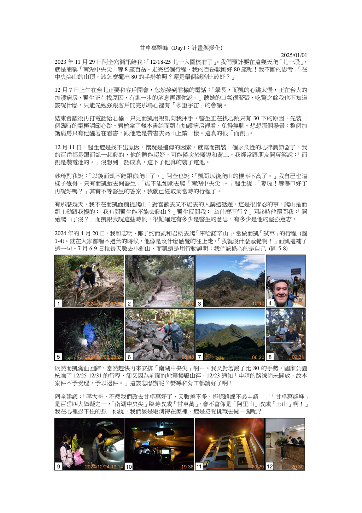

01ARCHIVE / 2024—2026
把日子，寫成一座
可以回去的山。
李博留下一段段關於遠方、工作、家人與台灣的文字。這裡把那些分享過的文章、圖片、影片與文件，重新整理成一條可以慢慢走的路。
開始探索 ↓
山徑、桌邊與訊息之間
TAIWAN / 25°02′N
向下閱讀 ↓
FIND A MEMORY
找一段想回去的記憶
查看 →
THE STORY BEHIND
一個人的分享，
也可以成為一座公共的房間。
從甘卓萬群峰的霧雨，到南極的白；從公司裡一本年終手冊，到面對台灣的每一次發言。李博的文字總在記錄「人怎麼一起走過一段路」。
認識這座存檔 ↗
“
A NOTE ON
GOING TOGETHER
GOING TOGETHER
ONE DEEP READ
「每一個人到這家公司上班，應該知道公司做了什麼。」
— 2025.01.26，李博寫於全廠年終會議手冊分享
這不是一份只談數字的年報。它談部門的進步、一起看的電影、團體活動，也談一個人是否願意把時間留在這裡。李博把企業寫成一場所有人都應該被邀請的對話。

THE ARCHIVE ROOM
資料室
96個原始分享
A LIVING TIMELINE
時間軸
不是每一則分享都需要被放大。有些只要留在日期裡，就已經足夠說明一個人如何生活。